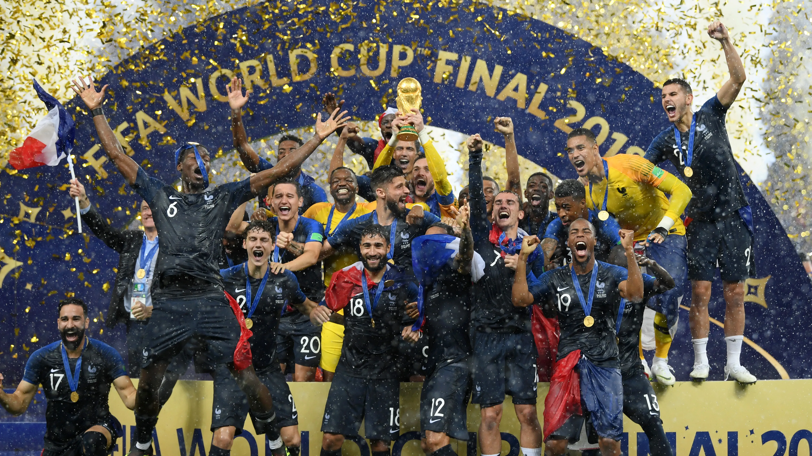
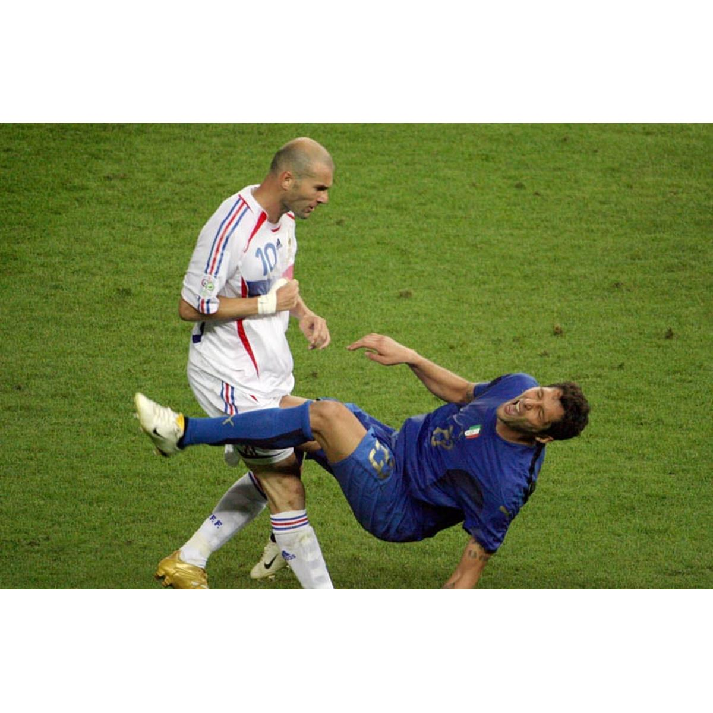

Oque é a Copa do Mundo ? A Copa Do Mundo da Fifa é o maior torneio de futebol do planeta, organizado pela FIFA. Ela reúne as melhores seleções nacionais para disputar o título de campeão mundial.
- Periodicidade O torneio acontece a cada 4 anos, reunindo as melhores equipes de todos os continentes.
- Primeira edição : A primeira copa do mundo foi realizada em 1930, no Uruguai , que também foi o primeiro campeão.
- A competição é por eliminatória: mata-mata (oitava quartas e seminifinais) Final:define o campeão.
- A partir de 2026, o torneio contará com 48 seleções. Sendo que em todas as outras copas eram apenas 32 seleções.
- Última edição : A copa do mundo mais recente aconteceu em 2022, no Qatar.A campeã foi a seleção Argentina.
- Maiores campeões do mundo atualmente são : Brasil: 5 títulos Alemanha: 4 títulos Itália: 4 títulos.

Atualmente a França é uma das seleções mais fortes, conquistando o título em 1998 e em 2018, sendo vice em 2006 e 2022.
Este é Neymar, maior artilheiro da história da seleção Brasileira, e esta em busca do Hexa.

A Copa do Mundo teve muitas polêmicas, entre elas houve a famosa cabeçada de Zinédine Zidane na final da copa após a provocações do zagueiro italiano Materazzi.